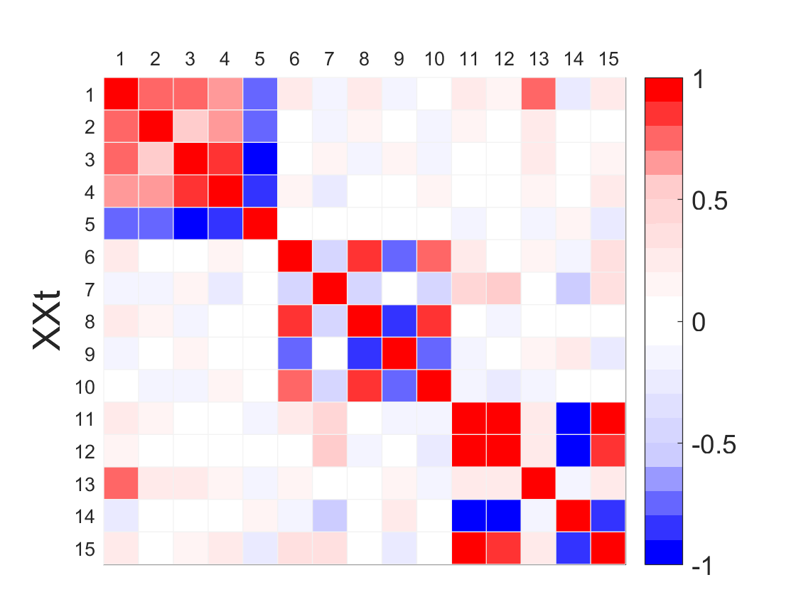
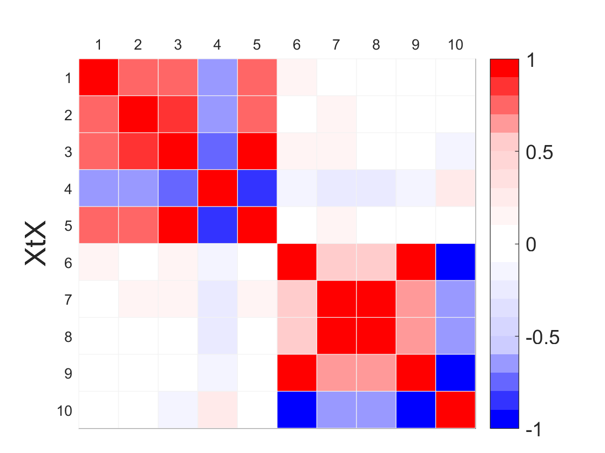
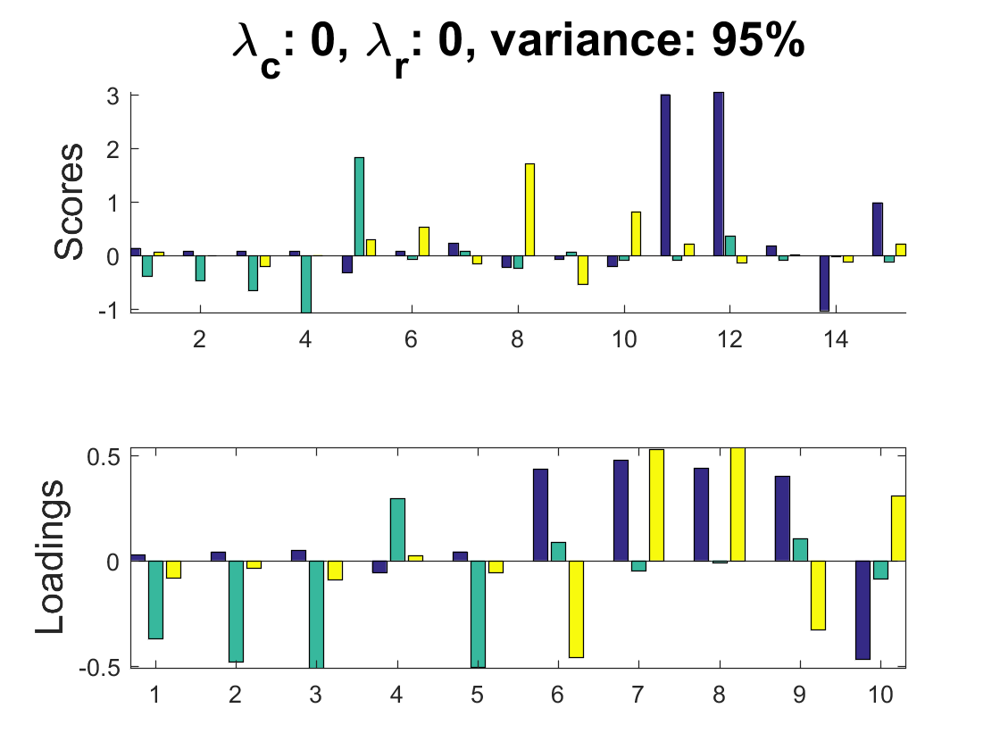
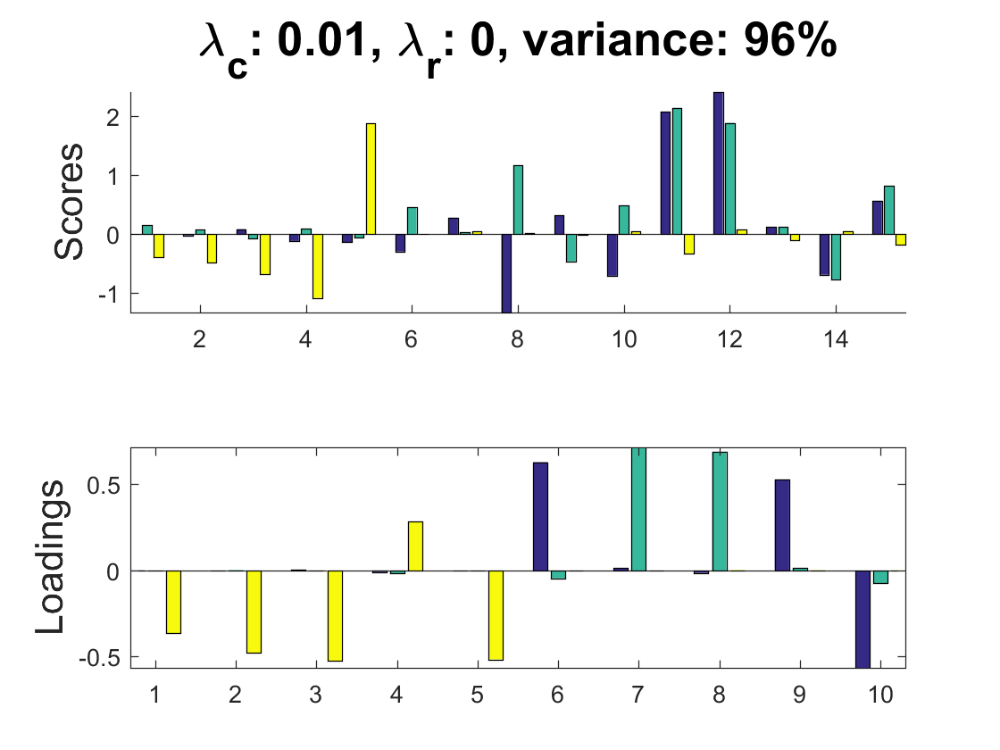
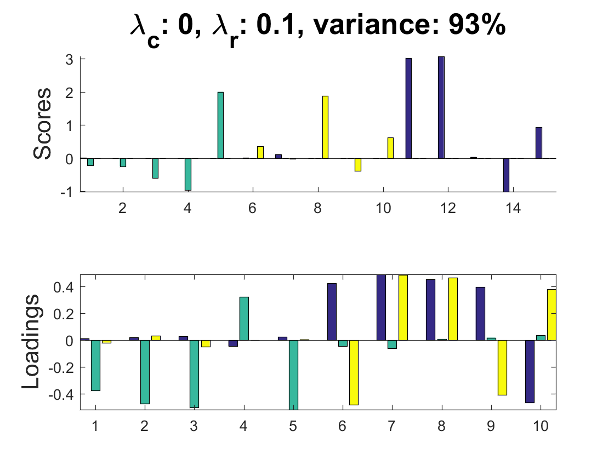
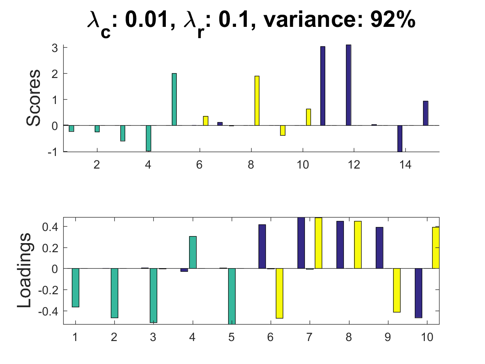
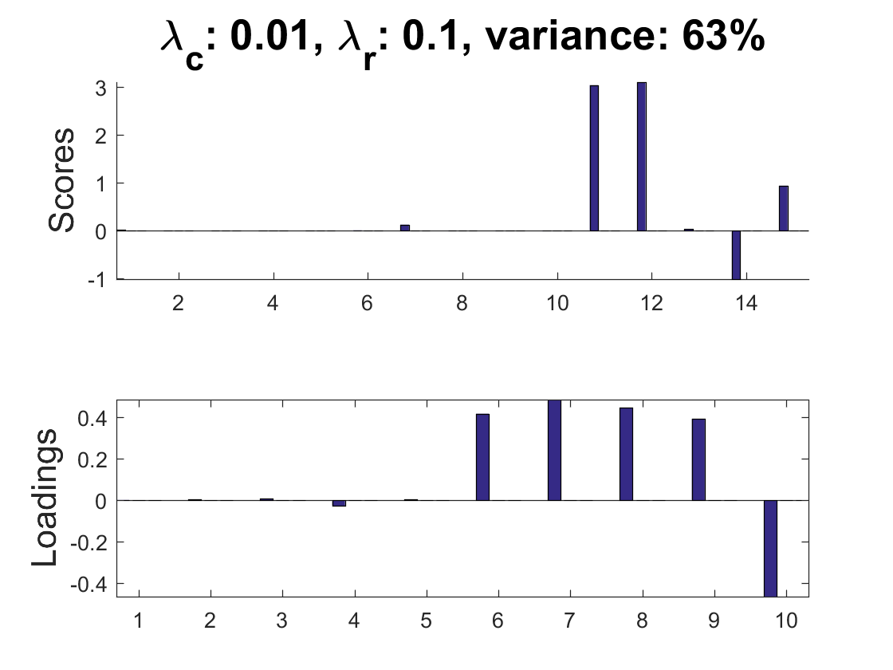
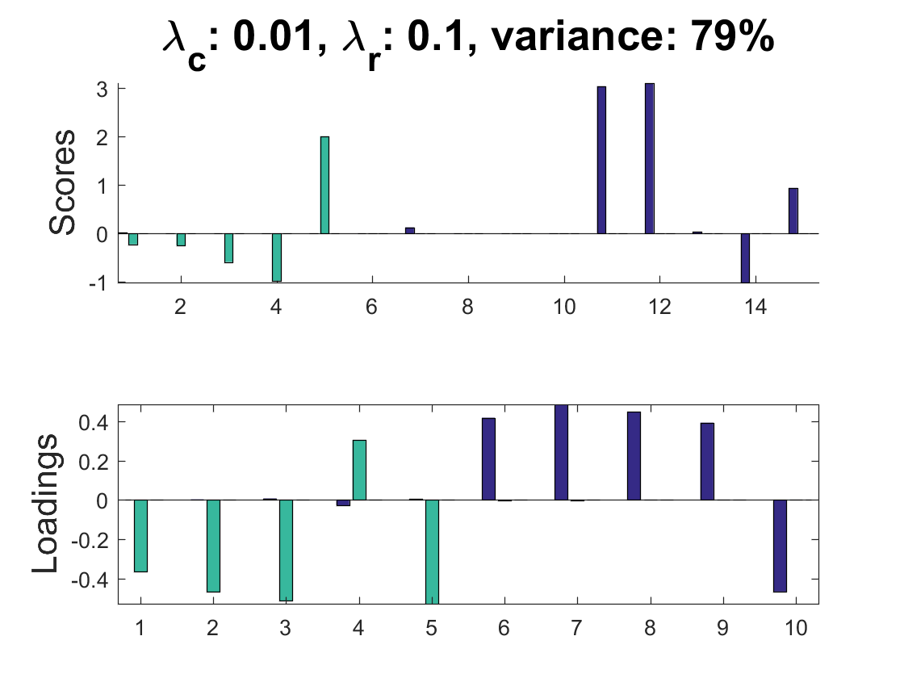
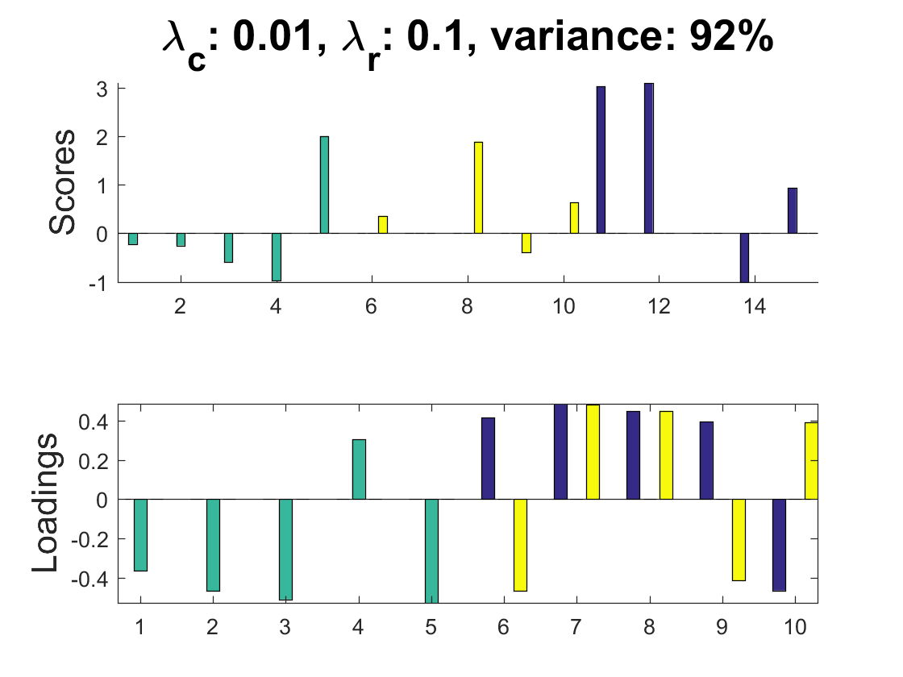

Contents
XCAN example of simulated data
J. Camacho, E. Acar, M. Rasmussen, R. Bro. Cross-product Penalized Component Analysis (XCAN), Submitted to Chemometrics and Intelligent Laboratory Systems, 2019.
Needs the MEDA Toolbox (v1.6), the XCAN (path should be properly set, see README file) and Poblano Toolbox (v1.2)
If you use these data, please add a reference to the above paper.
coded by: Jose Camacho Paez (josecamacho@ugr.es) last modification: 04/Feb/2025
Copyright (C) 2025 University of Granada, Granada
This program is free software: you can redistribute it and/or modify it under the terms of the GNU General Public License as published by the Free Software Foundation, either version 3 of the License, or (at your option) any later version.
This program is distributed in the hope that it will be useful, but WITHOUT ANY WARRANTY; without even the implied warranty of MERCHANTABILITY or FITNESS FOR A PARTICULAR PURPOSE. See the GNU General Public License for more details.
You should have received a copy of the GNU General Public License along with this program. If not, see http://www.gnu.org/licenses/.
close all
clear
clc
Simulated data
vars=5; obs=5; X=simuleMV(obs,vars,'LevelCorr',10); X2=simuleMV(obs,vars,'LevelCorr',10); X3=simuleMV(obs,vars,'LevelCorr',10); X = [X zeros(5,5);zeros(5,5) X2;zeros(5,5) 2*X3] + 0.15*randn(15,10); %save data/Simul X
Cross-product (XP) matrices
load data/Simul XXt = crossprod(X'); plotMap(XXt); ylabel('XXt','FontSize',20); XX = crossprod(X); plotMap(XX); ylabel('XtX','FontSize',20); 
XCAN: PCA vs XP-constraints
lambda = [0 .01 0 .01]; lambda2 = [0 0 .1 .1]; R = [3 3 3 3] close all clc varX = trace(X'*X); for i=1:length(lambda) [XP, XT] = xcan(X,1:R(i),XX,lambda(i),XXt,lambda2(i)); Xp = 0; for j=1:R(i) Xp = Xp + (XT(:,j)*pinv(XT(:,j)'*XT(:,j))*XT(:,j)')*X*(XP(:,j)*pinv(XP(:,j)'*XP(:,j))*XP(:,j)'); end varP = trace(Xp'*Xp); figure, subplot(2,1,1), title(sprintf('\\lambda_c: %g, \\lambda_r: %g, variance: %.0f%%',lambda(i),lambda2(i),100*varP/varX),'FontSize',20) hold on, bar(XT), ylabel('Scores','FontSize',16), axis tight, subplot(2,1,2), bar(XP), ylabel('Loadings','FontSize',16), axis tight, end
R =
3 3 3 3
Iter FuncEvals F(X) ||G(X)||/N
------ --------- ---------------- ----------------
0 1 0.05474566 0.00000000
Iter FuncEvals F(X) ||G(X)||/N
------ --------- ---------------- ----------------
0 1 0.27676406 0.01799961
100 232 0.09147808 0.00000590
141 314 0.09147796 0.00000007
Iter FuncEvals F(X) ||G(X)||/N
------ --------- ---------------- ----------------
0 1 16.86905771 1.77379563
100 324 0.37842918 0.00462495
200 605 0.37409602 0.00189485
300 872 0.37321550 0.00235434
400 1100 0.37309531 0.00006089
500 1302 0.37309109 0.00008542
522 1346 0.37309098 0.00000673
Iter FuncEvals F(X) ||G(X)||/N
------ --------- ---------------- ----------------
0 1 17.09107612 1.77388696
100 326 0.42917978 0.00335510
200 606 0.42752022 0.00236893
300 854 0.42718839 0.00080905
400 1088 0.42711808 0.00033259
500 1304 0.42709373 0.00018632
600 1512 0.42708885 0.00003591
700 1713 0.42708749 0.00002917
759 1831 0.42708745 0.00000248
    XCAN: Number of components
lambda = [.01 .01 .01]; lambda2 = [.1 .1 .1]; R = [1 2 3] close all clc varX = trace(X'*X); for i=1:length(lambda) [XP, XT] = xcan(X,1:R(i),XX,lambda(i),XXt,lambda2(i)); Xp = 0; for j=1:R(i) Xp = Xp + (XT(:,j)*pinv(XT(:,j)'*XT(:,j))*XT(:,j)')*X*(XP(:,j)*pinv(XP(:,j)'*XP(:,j))*XP(:,j)'); end varP = trace(Xp'*Xp); XP = [XP zeros(size(XP,1),3-i)]; XT = [XT zeros(size(XT,1),3-i)]; figure, subplot(2,1,1), title(sprintf('\\lambda_c: %g, \\lambda_r: %g, variance: %.0f%%',lambda(i),lambda2(i),100*varP/varX),'FontSize',20) hold on, bar(XT), ylabel('Scores','FontSize',16), axis tight, subplot(2,1,2), bar(XP), ylabel('Loadings','FontSize',16), axis tight, end
R =
1 2 3
Iter FuncEvals F(X) ||G(X)||/N
------ --------- ---------------- ----------------
0 1 1.20401753 0.85216804
76 199 0.48574994 0.00000837
Iter FuncEvals F(X) ||G(X)||/N
------ --------- ---------------- ----------------
0 1 8.70193449 2.04902533
100 316 0.43749803 0.00183817
200 574 0.43719719 0.00153684
300 789 0.43718566 0.00026002
364 919 0.43718537 0.00000361
Iter FuncEvals F(X) ||G(X)||/N
------ --------- ---------------- ----------------
0 1 17.09107612 1.77388696
100 326 0.42917978 0.00335510
200 606 0.42752022 0.00236893
300 854 0.42718839 0.00080905
400 1088 0.42711808 0.00033259
500 1304 0.42709373 0.00018632
600 1512 0.42708885 0.00003591
700 1713 0.42708749 0.00002917
759 1831 0.42708745 0.00000248
  XCAN: Thresholded XP
load data/Simul thr = 0.5; XXt = crossprod(X'); r = find(abs(XXt)<thr); XXt(r) = 0; plotMap(XXt); ylabel('XXt','FontSize',20); XX = crossprod(X); r = find(abs(XX)<thr); XX(r) = 0; plotMap(XX); ylabel('XtX','FontSize',20); lambda = [.01]; lambda2 = [.1]; R = [3]; close all clc varX = trace(X'*X); for i=1:length(lambda) [XP, XT] = xcan(X,1:R(i),XX,lambda(i),XXt,lambda2(i)); Xp = 0; for j=1:R(i) Xp = Xp + (XT(:,j)*pinv(XT(:,j)'*XT(:,j))*XT(:,j)')*X*(XP(:,j)*pinv(XP(:,j)'*XP(:,j))*XP(:,j)'); end varP = trace(Xp'*Xp); figure, subplot(2,1,1), title(sprintf('\\lambda_c: %g, \\lambda_r: %g, variance: %.0f%%',lambda(i),lambda2(i),100*varP/varX),'FontSize',20) hold on, bar(XT), ylabel('Scores','FontSize',16), axis tight, subplot(2,1,2), bar(XP), ylabel('Loadings','FontSize',16), axis tight, end
Iter FuncEvals F(X) ||G(X)||/N
------ --------- ---------------- ----------------
0 1 244.59146184 15.80344432
100 291 0.42966419 0.00007895
200 510 0.42963951 0.00005659
211 532 0.42963949 0.00000234
